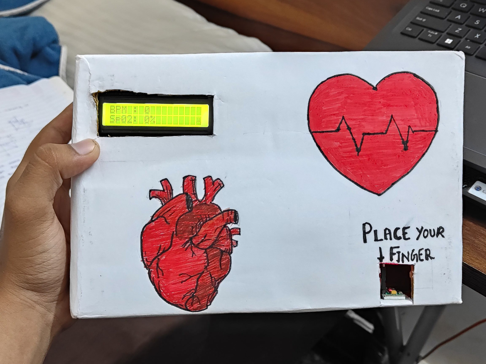

Working Pulse Oximeter
A pulse oximeter is a non-invasive device that measures the oxygen saturation level in the blood. It works by passing a beam of light through the skin and measuring the amount of light absorbed by oxygenated and deoxygenated blood.